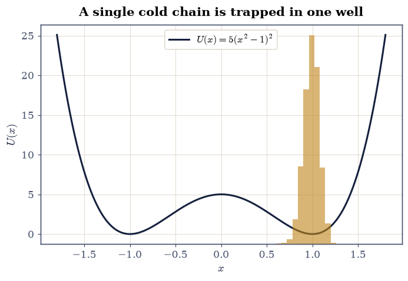
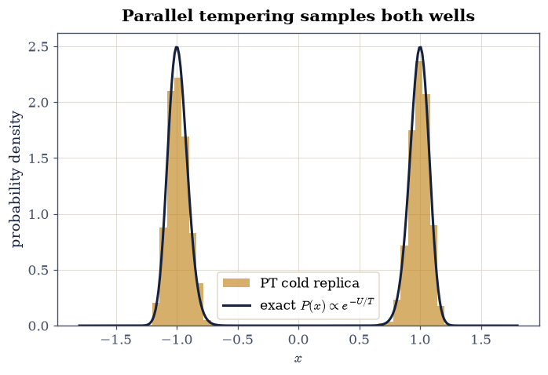
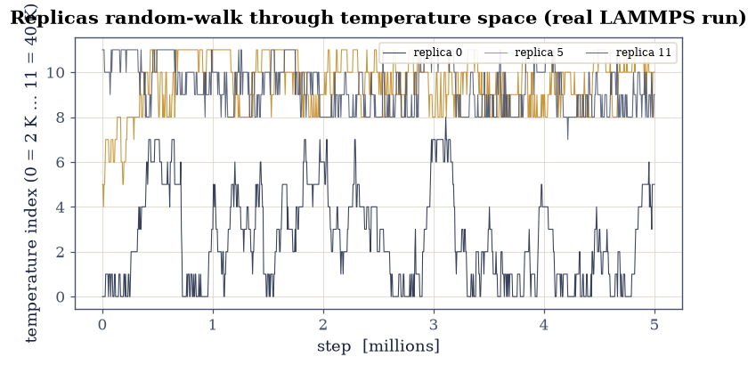
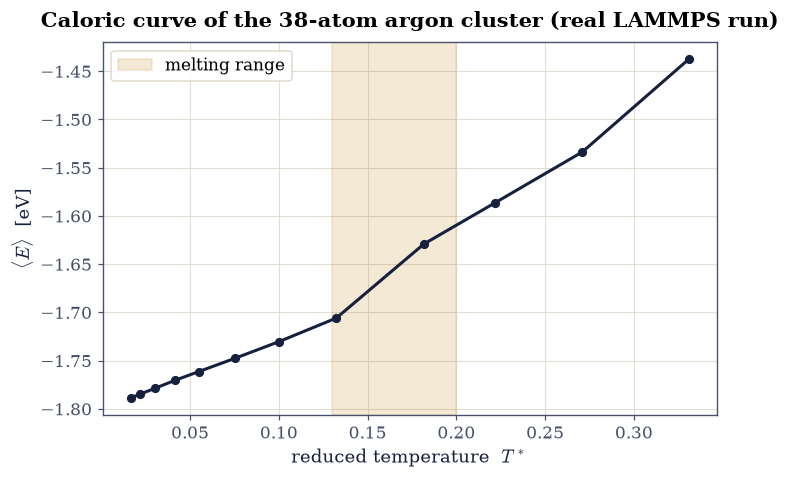
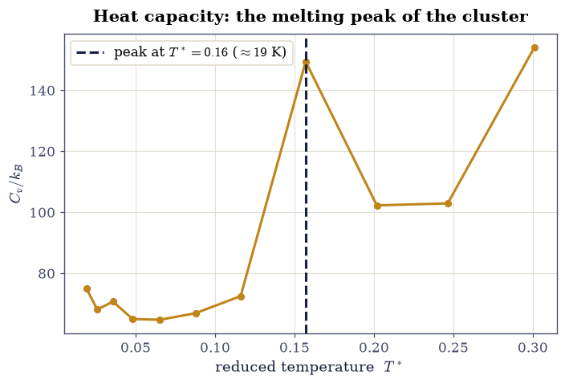

3.2 Replica Exchange and the Melting of a Cluster#
from ecp.style import header, use_style
use_style()
header(
volume="Volume III — Molecular Dynamics",
number="3.2",
title="Replica Exchange and the Melting of a Cluster",
blurb="The sampling problem of rugged landscapes, the parallel-tempering "
"algorithm that solves it by swapping configurations between temperatures, and "
"its payoff in the real LAMMPS run of the course: the caloric curve and "
"heat-capacity peak that locate the melting of a 38-atom argon cluster.",
difficulty="intermediate",
estimate="90–120 min",
source="FS 2023 · Lecture 12 (replica exchange)",
)
Notebook overview#
A single molecular-dynamics trajectory has a blind spot. On a rugged landscape, with deep minima separated by high barriers, a low-temperature run never has the energy to climb out of the basin it starts in, so its averages depend on where it began. The previous notebook met this as the trapping of an optimization; here it becomes the central problem of sampling. The fix is elegant: run many copies of the system at different temperatures at once, and let them trade configurations. The hot copies cross barriers freely, the cold copies inherit those crossings through the swaps, and the whole set samples the landscape far better than any one of them could alone. This is replica exchange, or parallel tempering.
This is the exercise from Lecture 12, and we take it in two steps. First we build the algorithm on a system simple enough to see exactly what it does: a double well, where a single chain stays stuck on one side and parallel tempering visits both. Then we turn to the course’s real result. The original ran a 38-atom argon cluster in LAMMPS with twelve replicas spanning 2 to 40 K, and from the committed output we reconstruct the caloric curve and the heat-capacity peak that pin down the cluster’s melting temperature.
Provenance. This notebook develops Lecture 12 of the course (replica exchange / parallel tempering, ensembles, and the heat capacity), an exercise designed by the author (Raymond Amador). The original ran a LAMMPS parallel-tempering simulation (the
replica-exchange.lammpsscript shown in Exercise 3) on the Euler cluster and committed its output; the caloric curve in Exercises 4 and 5 is reconstructed from those twelve real replica logs by pooling each processor’s potential energy by the reference temperature it occupied. The algorithm itself is reproduced in Python. The full course credit is in the footer.
Reading a validation. Each exercise closes with a check against something independent: an exact Boltzmann population, the monotonicity of a caloric curve, the known melting range of the cluster. A ✗ flags a mismatch to track down, not a verdict; a ✓ is strong evidence, not proof.
Units and scope. The double-well demo uses dimensionless energy and temperature. The cluster data is from a real argon run, so energies are in eV and temperature in kelvin; with the deck’s \(\varepsilon=0.01042\,\)eV \(=120.9\,k_B\)K the reduced temperature is \(T^\*=T/120.9\). For methods see Allen & Tildesley [AT17] and Frenkel & Smit [FS02]; the velocity-rescaling thermostat used in the run is Bussi et al. [BDP07].
Theory in brief#
The sampling problem#
A Monte Carlo or molecular-dynamics simulation at temperature \(T\) samples the Boltzmann distribution \(P(\mathbf x)\propto e^{-E(\mathbf x)/k_BT}\). To cross a barrier of height \(\Delta E\) it must wait a time \(\sim e^{\Delta E/k_BT}\), which at low temperature is astronomically long. The simulation is then non-ergodic on any practical timescale: it explores only the basin it started in, and its averages are wrong.
Parallel tempering#
Replica exchange runs \(M\) copies of the system at temperatures \(T_1<T_2<\dots<T_M\) simultaneously. Each evolves under ordinary dynamics, and periodically two replicas at adjacent temperatures attempt to swap configurations. The swap is accepted with a Metropolis criterion that preserves detailed balance for the joint ensemble:
A configuration that wandered over a barrier at high temperature can then descend, swap by swap, to low temperature, so each replica samples its Boltzmann distribution while drawing on the barrier-crossing power of the hot ones. The temperatures are spaced (often geometrically) so that neighbouring energy distributions overlap and swaps are accepted often enough.
Thermodynamics from the temperatures#
Running every temperature at once hands us a thermodynamic sweep for free. The average energy as a function of temperature is the caloric curve \(\langle E\rangle(T)\), and its slope is the heat capacity
A finite cluster melts over a narrow temperature range where the energy rises steeply, so \(C_v\) shows a peak there: the cluster’s melting temperature, read straight off the curve.
Setup#
import os
import numpy as np
import matplotlib.pyplot as plt
from ecp import validate
rng = np.random.default_rng(0)
INK, AMBER, SOFT = "#16213e", "#c0851a", "#46506b"
def double_well(x, a=5.0):
"""Symmetric double-well potential U(x) = a(x² - 1)².
Parameters
----------
x : float or numpy.ndarray
Position(s).
a : float, optional
Barrier height at x = 0 (default 5.0); the minima sit at x = ±1.
Returns
-------
float or numpy.ndarray
The potential energy.
"""
return a * (x * x - 1.0) ** 2
def data_file(name):
"""Locate a shipped data file, from the repo root (CI) or the notebook dir (Colab).
Parameters
----------
name : str
File name (or relative path) under a ``data`` directory.
Returns
-------
str
The first existing path found.
Raises
------
FileNotFoundError
If the file is not found under any candidate base.
"""
for base in ("data", os.path.join("notebooks", "03-molecular-dynamics", "data")):
path = os.path.join(base, name)
if os.path.exists(path):
return path
raise FileNotFoundError(name)
def read_swap_log():
"""Read the LAMMPS temper (replica-swap) log.
Returns
-------
tuple of numpy.ndarray
``(steps, idx)``: the step column and ``idx[t, p]``, the temperature
index that replica p occupies at recorded step t.
"""
rows = np.loadtxt(data_file("replica-logs/swap.log"))
return rows[:, 0], rows[:, 1:].astype(int)
def read_replica_log(p):
"""Read one replica's per-step thermodynamic log.
Parameters
----------
p : int
Replica index (0-11).
Returns
-------
numpy.ndarray
Columns ``[Step, Temp, PotEng]`` for that replica.
"""
return np.loadtxt(data_file(f"replica-logs/replica_{p:02d}.log"))
Exercise 1 — The trapping problem#
Take the symmetric double well \(U(x)=a(x^2-1)^2\) with \(a=5\), two basins at \(x=\pm1\) split by a barrier of height \(5\). At a low temperature \(T=0.25\) the Boltzmann distribution is symmetric, so a correct sampler should spend half its time in each basin. A single Metropolis chain started in the right basin does not: crossing the barrier costs \(e^{5/0.25}=e^{20}\), so it stays put for the entire run, and its sampled distribution is wrong by a factor of two.
Part a) Implement a Metropolis chain mc_chain. Part b) Run it cold from
the right basin and confirm it is trapped.
findfont: Failed to find font weight 600, now using 700.

Fig. 26 The double well \(U(x)=5(x^2-1)^2\) (navy) and the distribution sampled by a single Metropolis chain at \(T=0.25\) started in the right basin (amber histogram). The chain never crosses the barrier of height 5, so it samples only the right well: a non-ergodic, and wrong, result, since the symmetric potential should populate both wells equally.#
Validation 1 — the single chain is non-ergodic#
Started in the right basin (\(x>0\)), the cold chain must spend essentially all its time there: a fraction near one, not the correct one-half.
✓ a single cold Metropolis chain stays trapped in one well [fraction with x>0 = 1.000]
True
Exercise 2 — Parallel tempering escapes the barrier#
Now run several replicas at once, from a cold \(T_1=0.25\) up to a hot \(T_M=4\) where the barrier is easily crossed, and attempt swaps between adjacent temperatures with the criterion Eq. 26. A configuration that crosses the barrier in a hot replica can be swapped down to the cold one, so the cold replica, the one we care about, finally samples both wells. Because the potential is symmetric, the exact Boltzmann answer is one-half in each, and parallel tempering recovers it.
Part a) Implement parallel_tempering, returning the cold replica’s samples.
Part b) Confirm the cold replica now populates both wells equally.

Fig. 27 Distribution of the cold (\(T=0.25\)) replica under parallel tempering across eight temperatures from 0.25 to 4 (amber), against the exact Boltzmann distribution \(P(x)\propto e^{-U(x)/T}\) (navy). The swaps carry barrier crossings down from the hot replicas, so the cold replica now samples both wells with the correct equal weight: the non-ergodicity of Exercise 1 is cured.#
Validation 2 — the cold replica now samples both wells equally#
With the swaps in place, the cold replica must populate the two symmetric wells with equal weight, the exact Boltzmann result: a fraction near one-half.
✓ parallel tempering recovers the exact symmetric Boltzmann populations [got 0.4975 vs expected 0.5 (rtol=1e-06)]
True
Exercise 3 — The real run: LAMMPS parallel tempering of an argon cluster#
The course applied exactly this algorithm to a 38-atom argon cluster in LAMMPS, with twelve replicas. The temperatures are spread geometrically from 2 K to 40 K, a harmonic wall confines the cluster so atoms cannot evaporate at the hot end, and an exchange is attempted every 1000 steps:
variable t world 2.00 2.60 3.64 5 6.63 9.12 12.07 16 21.97 26.83 32.76 40.00
pair_style lj/cut 8.5
pair_coeff 1 1 0.01042 3.405 8.5 # argon: epsilon = 0.01042 eV, sigma = 3.405 A
fix 1 all nvt temp $t $t 0.1 # a different target temperature per replica
fix 2 all wall/region rs harmonic 2.0 0.0 0.4 # spherical confinement
temper 5000000 1000 $t 1 3678 3490 # attempt an exchange every 1000 MD steps
The full script ships with this notebook: replica-exchange.lammps.
Postprocessing the output is the crux. Each processor holds a configuration whose
temperature changes as swaps are accepted, so to recover the canonical average at
a fixed temperature we pool every processor’s potential energy by the reference
temperature it occupied at that step, read from the exchange log. We map the swaps
here, and turn them into the caloric curve in Exercise 4.
The committed output ships with this notebook: the swap log
swap.log records which of the twelve
temperatures each replica occupies over time, and the twelve per-replica thermo
logs replica_00.log … replica_11.log hold each one’s potential energy.
Part a) Read the swap log and plot the temperature index versus step for a few replicas (Assignment 1). Part b) Confirm a replica random-walks across the whole temperature ladder, the condition for parallel tempering to help.

Fig. 28 Temperature random-walk from the real LAMMPS run: the temperature index occupied by three of the twelve replicas over the five-million-step simulation. Accepted swaps carry each replica up and down the whole ladder (2–40 K), so every configuration spends time hot enough to cross barriers and cold enough to refine its structure. This wandering, not a fixed temperature per replica, is what makes the method work.#
swap activity: 32.3% of steps change a replica's temperature; a tracked replica visits 5–10 of the 12 temperatures
Validation 3 — the replicas mix across temperatures#
Parallel tempering only helps if configurations actually move through temperature space. Every replica must visit a broad span of the ladder, not stay pinned at one temperature.
✓ every replica random-walks across a broad span of the temperature ladder [replicas visit 5–10 of 12 temperatures; swaps active on 32.3% of steps]
True
Exercise 4 — The caloric curve and the melting step#
Plot the energy against temperature. Below melting the cluster is a rigid solid, and its energy rises only gently as the atoms vibrate a little harder. Through the melting range the structure breaks up, and the energy jumps as the latent heat goes into disordering the cluster. That steep step, here around \(T^\*\approx0.16\) (\(T\approx19\,\)K), is the thermodynamic signature of melting, visible directly in the caloric curve.
Part a) Plot \(\langle E\rangle\) against \(T^\*\). Part b) Identify the steep (melting) section and confirm it lies in the expected range for a 38-atom Lennard-Jones cluster, \(T^\*\sim0.1\)–\(0.2\).

Fig. 29 Caloric curve of the 38-atom argon cluster from the real LAMMPS parallel-tempering run: average potential energy (eV) versus reduced temperature \(T^\ast=T/120.9\). The energy rises gently while the cluster is solid, then steeply through the melting range near \(T^\ast\approx0.16\) (amber band) as latent heat disorders the structure, then continues to climb in the liquid.#
Validation 4 — melting sits where it should#
The steepest rise of the caloric curve, the melting transition, must fall in the known melting range of a 38-atom Lennard-Jones cluster, \(T^\*\approx0.1\)–\(0.2\).
✓ the caloric curve's steepest rise locates cluster melting near T* ~ 0.16 [steepest dE/dT at T* = 0.157 (T = 19 K)]
True
Exercise 5 — The heat-capacity peak#
The heat capacity \(C_v=d\langle E\rangle/dT\) Eq. 27 turns the melting step into a peak. For a macroscopic system the peak would be a sharp divergence at a first-order transition; for a 38-atom cluster it is a finite, rounded bump, but it still marks the melting temperature unambiguously. This is the result the course was built around: a thermodynamic transition measured by parallel tempering.
Part a) Compute \(C_v\) from the caloric curve. Part b) Confirm its peak coincides with the melting transition of Exercise 4.

Fig. 30 Heat capacity \(C_v=d\langle E\rangle/dT\) of the 38-atom argon cluster (in units of \(k_B\)), from the caloric curve of the real parallel-tempering run. The peak at \(T^\ast\approx0.16\) (\(T\approx19\,\)K, amber line) is the rounded, finite-size remnant of the melting transition: the cluster’s melting point, read from its heat capacity.#
Validation 5 — the heat-capacity peak is a genuine melting transition#
The melting feature must be a real peak: the heat capacity rises to it and falls away on the high-temperature side, the finite-size signature of the solid melting, not a monotonic ramp.
✓ C_v has a local melting peak at the caloric-curve step [C_v/k_B at T* = 0.16: 72.5 < 149.4 > 102.3]
True
Notebook summary#
We saw why a single cold chain is trapped, then watched parallel tempering cure it: swapping configurations up and down a temperature ladder let the cold replica sample both wells with the correct Boltzmann weight. Applied to the course’s real twelve-replica LAMMPS run, the swap log showed each replica random-walking across the ladder, and pooling each replica’s potential energy by the temperature it occupied reconstructed the caloric curve. Its steepest rise, a peak in the heat capacity near \(T^\ast\approx0.16\) (\(\approx19\,\)K), located the melting transition of the 38-atom cluster.
Outlook#
Better heat capacities. The committed run is short, so \(C_v\) from energy fluctuations, \(C_v=\langle E^2\rangle-\langle E\rangle^2)/k_BT^2\), is noisy here; the multiple-histogram (WHAM) method combines all temperatures to sharpen both the caloric curve and the peak.
The solid-solid transition. Below melting the 38-atom cluster also converts between its truncated-octahedron and icosahedron forms (Volume II); a finer temperature grid resolves the small low-temperature heat-capacity feature this produces.
Order parameters. Tracking the Steinhardt \(Q_4\) or \(Q_6\) (notebook 2.1) along the replicas shows the structural change through the transition, not just its energy.
Finding the global minimum. Because parallel tempering crosses funnels, a low replica eventually settles into the global truncated octahedron that defeated the single-funnel basin-hopping of Volume II.
References#
Michael P. Allen and Dominic J. Tildesley. Computer Simulation of Liquids. Oxford University Press, 2 edition, 2017.
Giovanni Bussi, Davide Donadio, and Michele Parrinello. Canonical sampling through velocity rescaling. The Journal of Chemical Physics, 126(1):014101, 2007. doi:10.1063/1.2408420.
Daan Frenkel and Berend Smit. Understanding Molecular Simulation: From Algorithms to Applications. Academic Press, 2 edition, 2002.
from ecp.style import footer
footer()